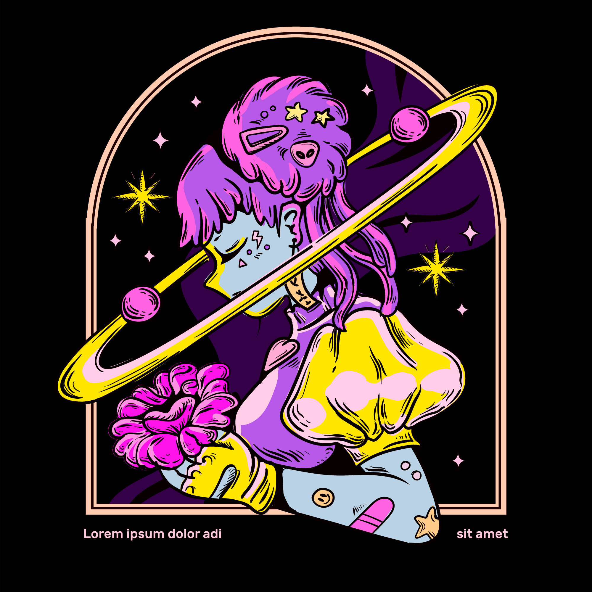
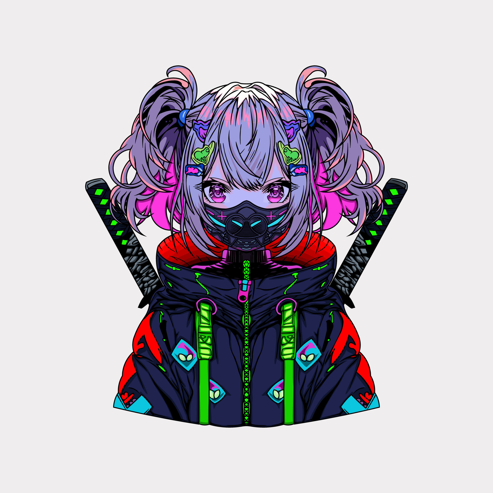

Image credit: Freepik (image source) / Vecteezy (image source)
The World of Anime: From DBZ to JJK
My Anime Experience
The first anime I ever watched was Dragon Ball Z, which introduced me to intense battles, powerful transformations, and unforgettable rivalries. What really stood out to me was the character Vegeta; his pride, determination, and growth over time made him one of my favorite characters in all of anime. Watching his journey from villain to hero added a deeper layer to the story that kept me invested.
The anime that got me back into watching was Sword Art Online, mainly because of its unique concept and immersive virtual world. The idea of being trapped inside a game felt exciting and intense, and the relationship between Kirito and Asuna made the story even more engaging. Their teamwork and character development added emotional depth beyond just the action.
My favorite current anime is Jujutsu Kaisen, thanks to its incredible animation, darker themes, and fast-paced fights. Characters like Gojo stand out because of his overwhelming power and personality, while Yuta adds a different kind of emotional depth and strength to the story. The combination of strong characters and high-quality animation makes it one of the most exciting anime I’ve watched recently.
Anime Table
| Name | Year Released | Year I Watched | Reason |
|---|---|---|---|
| Dragon Ball Z | 1989 | 1998 | Intense battles and powerful characters |
| Sword Art Online | 2012 | 2012 | Unique story and immersive virtual world |
| Jujutsu Kaisen | 2020 | 2021 | Amazing animation, dark themes, and exciting fights |
Other Favorite Anime
- Kaiju No. 8
- Frieren
- Seven Deadly Sins
- Demon Slayer
- Erased